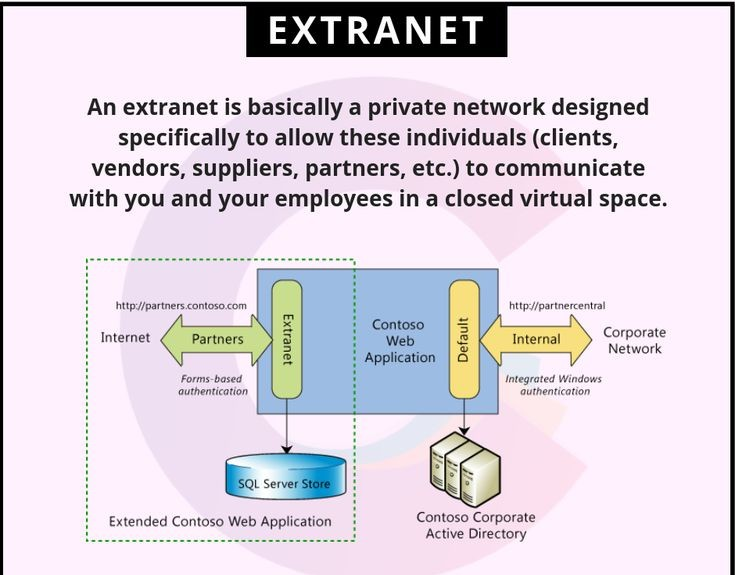

An extranet is a controlled private network that allows external partners, suppliers, or customers to access certain organizational resources. An extranet extends the intranet by allowing trusted outsiders, like suppliers or clients, limited access. It works by creating secure gateways so external partners can collaborate without exposing the entire internal system. This makes business cooperation smoother while keeping sensitive data protected.
